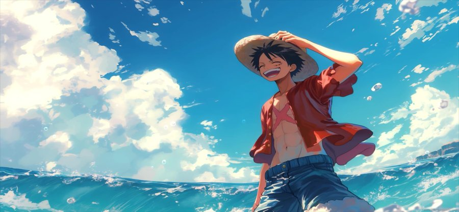
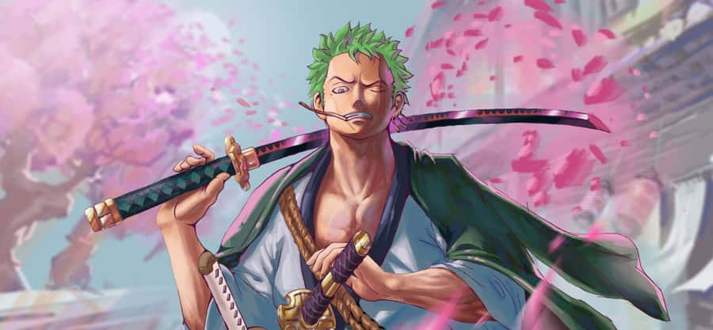
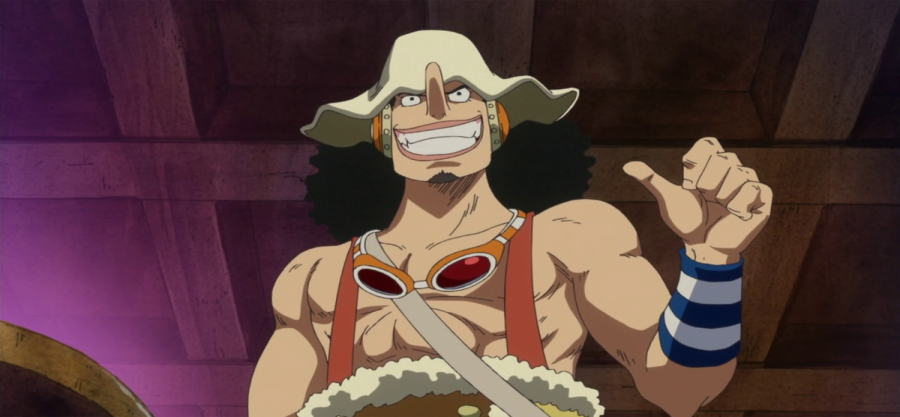
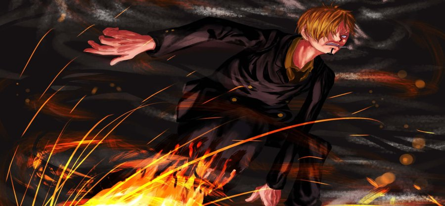
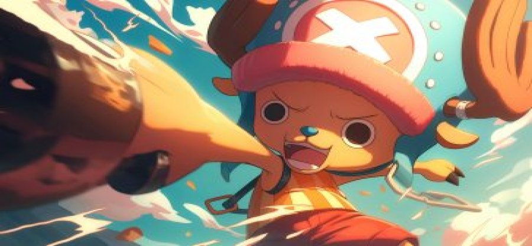
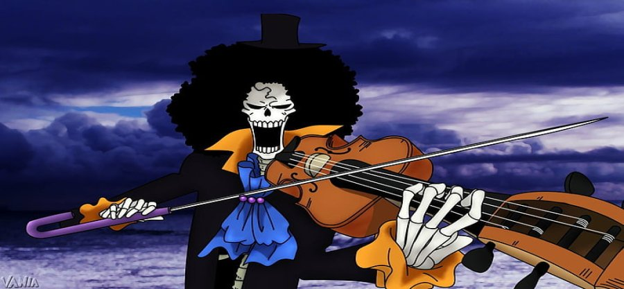
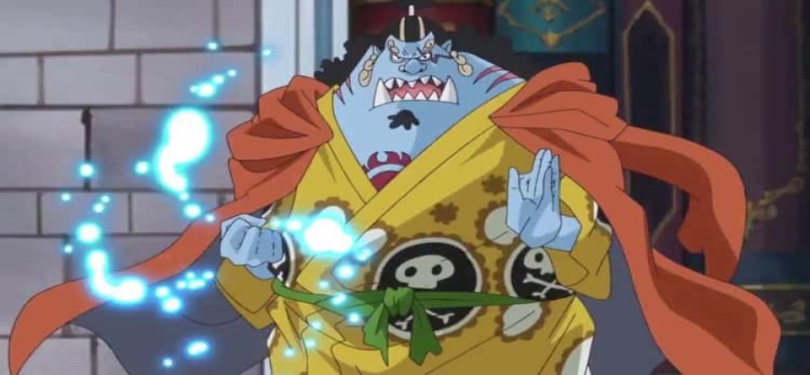

One Piece is a Japanese manga series written and illustrated by Eiichiro Oda. It has been serialized in Shueisha's shōnen manga magazine Weekly Shōnen Jump since July 1997, with its individual chapters compiled in 108 tankōbon volumes as of March 2024. The story follows the adventures of Monkey D.Luffy and his crew, the Straw Hat Pirates, where he explores the Grand Line in search of the mythical treasure known as the "One Piece" in order to become the next King of the Pirates.
The story is set in a vast world covered in oceans, with countless islands and seas. The world is divided into four major seas: East Blue, West Blue, North Blue, and South Blue. At the center of these seas is the Grand Line, a dangerous and mysterious sea where the most significant adventures take place.The story begins with the execution of Gol D. Roger, the Pirate King. Before his death, Roger revealed that he had hidden the greatest treasure, the "One Piece," at the end of the Grand Line. This revelation sparked the Great Pirate Era, with countless pirates setting sail in search of the One Piece, hoping to become the next Pirate King. Monkey D.Luffy, inspired by his childhood hero "Red-Haired" Shanks, dreams of becoming the Pirate King. Luffy possesses a cheerful and determined personality, and his defining trait is his rubber-like body, a result of eating the Gum-Gum Fruit, a type of Devil Fruit.
|  |
 |
|
 |
 |
|  |
|
|
 |
 |
| Si.No | Name of the crew | Captain of the crew | Notable Members | Achievements |
|---|---|---|---|---|
| 1 | The Roger Pirates | Gol D. Roger | Silvers Rayleigh, Scopper Gaban, Shanks, Buggy | Found the One Piece and reached Raftel (Laugh Tale), starting the Great Pirate Era. |
| 2 | The Straw Hat Pirates | Monkey D. Luffy | Roronoa Zoro, Nami, Usopp, Sanji, Tony Tony Chopper, Nico Robin, Franky, Brook, Jinbe | Defeated numerous Warlords and powerful adversaries, declared war on the World Government, and have significantly influenced various islands and nations. |
| 3 | The Whitebeard Pirates | Edward Newgate (Whitebeard) | Marco, Jozu, Vista, Ace | One of the Four Emperors, maintained balance in the New World, and waged the pivotal War of the Best at Marineford. |
| 4 | The Red-Haired Pirates | Shanks | Benn Beckman, Yasopp, Lucky Roux | One of the Four Emperors, significant influence on Luffy, and played key roles in maintaining balance in the pirate world. |
| 5 | The Big Mom Pirates | Charlotte Linlin (Big Mom) | Katakuri, Smoothie, Cracker, Perospero | One of the Four Emperors, control over Whole Cake Island and a vast territory, and possess significant political power. |
| 6 | The Beast Pirates | Kaido | King, Queen, Jack, the Tobiroppo | One of the Four Emperors, control over Wano Country, and amassing a powerful army of Zoan-type Devil Fruit users. |
| 7 | The Blackbeard Pirates | Marshall D. Teach (Blackbeard) | Shiryu, Van Augur, Jesus Burgess, Catarina Devon, Laffitte | Became one of the Four Emperors, obtained the powers of two Devil Fruits, and defeated the remnants of the Whitebeard Pirates. |
| 8 | The Heart Pirates | Trafalgar D. Water Law | Bepo, Penguin, Shachi | Played crucial roles in the defeat of Doflamingo and in the Wano Country arc, and formed an alliance with the Straw Hat Pirates. |
| 9 | The Kid Pirates | Eustass Kid | Killer, Heat, Wire | Allied with Luffy and Law in the Wano Country arc, one of the Worst Generation members with a significant reputation. |
| 10 | The Revolutionary Army | Monkey D. Dragon | Sabo, Ivankov, Kuma (formerly) | Directly oppose the World Government, aiming to overthrow the corrupt system and bring about a new era of freedom. |